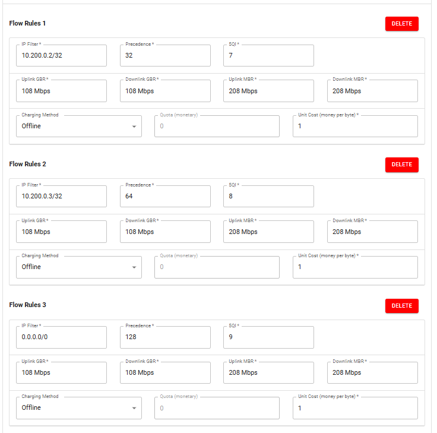

From 5G QoS Flows to Linux TC
Note
Author: Kai-Xu, Zhan
Date: 2026/08/05
1. The Question That Started This Work
free5GC can establish multiple QoS Flows within one PDU Session. Their identities and QoS characteristics are represented by the QoS Flow Identifier (QFI) and 5G QoS Identifier (5QI), while PFCP installs Packet Detection Rules (PDRs) and QoS Enforcement Rules (QERs) in the UPF.
Linux Traffic Control (TC) cannot directly reuse QFI unless it is exposed through Linux packet metadata.
One option is to classify packets again in TC by IP address or port, but that duplicates logic already represented by the 5G QoS policy and PFCP rules.
This work uses a different path:
5G QoS policy
→ PDR / QER and assigned QFI
→ gtp5g maps QFI to skb->mark
→ TC maps the mark to a class
The goal is to let free5GC define the QoS Flow classification, let gtp5g expose the selected QFI through skb->mark, and let Linux TC apply the scheduling policy.
This post first validates that path through WebConsole, MongoDB, NGAP, PFCP, GTP-U, gtp5g, and TC, then compares Baseline and QFI-aware TC under congestion.
2. Test Environment and Three-VM Architecture
The lab uses three virtual machines.
VM 1: free5GC
Clone free5GC and its pinned submodules:
git clone \
--branch flow-to-tc \
--recurse-submodules \
https://github.com/KASHZKX/free5gc.git
Clone the gtp5g branch used in this experiment:
cd ~
git clone \
--branch feat/flow-to-tc \
https://github.com/KASHZKX/gtp5g.git
The important interfaces are:
enp0s8 → N2/N3 network toward the UERANSIM VM
enp0s9 → N6 network toward the Data Network VM
VM 2: UERANSIM
Clone UERANSIM:
git clone https://github.com/aligungr/UERANSIM.git
This VM runs both the UERANSIM gNB and UE. After PDU Session establishment, the UE is assigned 10.60.0.1 through uesimtun0.
N2 carries control-plane signaling over SCTP, while N3 carries GTP-U user-plane traffic between the gNB and UPF.
VM 3: Data Network
The third VM provides the iperf3 endpoints:
10.200.0.2 → Stable Flow
10.200.0.3 → Normal Flow
Stable Flow and Normal Flow are experiment-specific labels. The Data Network VM connects through N6 and routes return traffic to the UE subnet through the UPF.
┌────────────────────┐
│ UERANSIM VM │
│ gNB + UE │
│ UE: 10.60.0.1 │
└─────────┬──────────┘
│ N2 / SCTP
│ N3 / GTP-U
┌─────────▼──────────┐
│ free5GC VM │
│ enp0s8: N2 / N3 │
│ enp0s9: N6 │
└─────────┬──────────┘
│ N6
┌─────────▼──────────┐
│ Data Network VM │
│ 10.200.0.2 Stable │
│ 10.200.0.3 Normal │
└────────────────────┘
TC is attached to the UPF egress path:
Uplink → enp0s9 egress
Downlink → enp0s8 egress
3. Creating the QoS Flow Policies
Start free5GC and WebConsole, then configure the default UE subscription with three Flow Rules.
| Role | IP filter | Precedence | 5QI |
|---|---|---|---|
| Stable | 10.200.0.2/32 |
32 | 7 |
| Normal | 10.200.0.3/32 |
64 | 8 |
| Catch-all | 0.0.0.0/0 |
128 | 9 |

4. Following the Policy Through free5GC
Verify that WebConsole stored the policy in MongoDB:
mongosh
use free5gc
db.getCollection("policyData.ues.flowRule").find().pretty()
db.getCollection("policyData.ues.qosFlow").find().pretty()
The two collections are linked by qosRef:
10.200.0.2/32 → qosRef 1 → 5QI 7
10.200.0.3/32 → qosRef 2 → 5QI 8
0.0.0.0/0 → qosRef 3 → 5QI 9
qosRef is not a QFI. It only links flowRule and qosFlow records in the policy database. The SMF assigns the actual QFI when it creates the QoS Flow.
Before PDU Session establishment, capture NGAP traffic:
sudo tcpdump -i enp0s8 -nn -s 0 \
-w ngap-qos-flow-validation.pcap \
sctp port 38412
The NGAP capture used in this validation: ngap-qos-flow-validation.pcap.
In Wireshark, inspect:
PDUSessionResourceSetupRequest
→ QoSFlowSetupRequestList
The capture used in this validation showed:
| QFI | 5QI | Role |
|---|---|---|
| 1 | 9 | PDU Session default QoS Flow |
| 2 | 7 | Stable Flow |
| 3 | 8 | Normal Flow |
| 4 | 9 | Catch-all Flow Rule |
Next, capture PFCP traffic:
sudo tcpdump -i any -nn -s 0 \
-w pfcp-qfi-validation.pcap \
udp port 8805
The PFCP capture used in this validation: pfcp-qfi-validation.pcap.
The PFCP Session Establishment Request contained eight Create PDR entries: one Access-side and one Core-side PDR for each logical Flow. In this capture, the key mappings were:
Stable:
10.200.0.2/32
→ PDR 3 / PDR 4
→ QER 3
→ QFI 2
Normal:
10.200.0.3/32
→ PDR 5 / PDR 6
→ QER 4
→ QFI 3
PDR and QER identifiers are specific to this capture; the Flow Description, QFI, and rule relationships are the important evidence.
5. Mapping QFI to a Linux TC Mark in gtp5g
The gtp5g modification bridges 5G QoS Flow information to Linux TC by copying the selected QFI into skb->mark:
QFI N → skb->mark N
Its core behavior can be summarized as:
static void gtp5g_apply_skb_label(struct sk_buff *skb, u8 qfi)
{
skb->mark = qfi;
}
For uplink traffic, gtp5g decapsulates the GTP-U packet, matches the Access PDR, selects pdr->qfi when available or falls back to the incoming QFI, and writes the value before N6 egress:
GTP-U decapsulation
→ matched Access PDR
→ select QFI
→ write skb->mark
→ N6 egress TC
For downlink traffic, gtp5g matches the Core PDR, creates the GTP-U packet, and writes the PDR QFI before N3 egress:
Matched Core PDR
→ create GTP-U packet
→ write pdr->qfi into skb->mark
→ N3 egress TC
free5GC defines the QoS Flow classification, gtp5g exposes the selected identity, and TC maps it to a scheduling class.
6. Preparing the Two TC Modes
Use setup-tc.sh to select a direction and mode:
#!/usr/bin/env bash
set -Eeuo pipefail
usage() {
cat <<'USAGE'
Usage:
sudo ./setup-tc.sh uplink baseline
sudo ./setup-tc.sh uplink qfi
sudo ./setup-tc.sh downlink baseline
sudo ./setup-tc.sh downlink qfi
Arguments:
direction
uplink Apply TC to the UPF N6 egress interface.
downlink Apply TC to the UPF N3 egress interface.
mode
baseline HTB bottleneck with one shared fq_codel.
qfi HTB bottleneck with Default, Stable, and Normal classes.
Environment variables:
N3_IF UPF N3 interface. Default: enp0s8
N6_IF UPF N6 interface. Default: enp0s9
BOTTLENECK_RATE Per-direction HTB bottleneck. Default: 10mbit
STABLE_MARK Stable Flow skb mark. Default: 2
NORMAL_MARK Normal Flow skb mark. Default: 3
STABLE_CLASS_RATE Stable class guaranteed rate. Default: 5mbit
NORMAL_CLASS_RATE Normal class guaranteed rate. Default: 1mbit
DEFAULT_CLASS_RATE Default class guaranteed rate. Default: 128kbit
FQ_LIMIT fq_codel packet limit. Default: 10240
FQ_FLOWS fq_codel flow buckets. Default: 1024
FQ_QUANTUM fq_codel DRR quantum. Default: 1514
FQ_TARGET fq_codel target delay. Default: 5ms
FQ_INTERVAL fq_codel interval. Default: 100ms
USAGE
}
log() {
printf '[%s] %s\n' "$(date '+%Y-%m-%d %H:%M:%S')" "$*"
}
fail() {
printf '[ERROR] %s\n' "$*" >&2
exit 1
}
require_root() {
if (( EUID != 0 )); then
fail "Run this script as root, for example: sudo $0 uplink baseline"
fi
}
require_command() {
local command_name="$1"
command -v "${command_name}" >/dev/null 2>&1 \
|| fail "Required command not found: ${command_name}"
}
require_interface() {
local iface="$1"
ip link show dev "${iface}" >/dev/null 2>&1 \
|| fail "Network interface does not exist: ${iface}"
}
add_fq_codel() {
local iface="$1"
local parent="$2"
local handle="$3"
tc qdisc add dev "${iface}" parent "${parent}" handle "${handle}" fq_codel \
limit "${FQ_LIMIT}" \
flows "${FQ_FLOWS}" \
quantum "${FQ_QUANTUM}" \
target "${FQ_TARGET}" \
interval "${FQ_INTERVAL}" \
ecn
}
clear_existing_tc() {
local iface="$1"
# Deleting a missing root qdisc is expected on a clean interface.
tc qdisc del dev "${iface}" root 2>/dev/null || true
}
apply_baseline() {
local iface="$1"
log "Applying baseline TC to ${iface}"
# HTB only enforces the per-direction 10 Mbit/s bottleneck.
# Both experiment flows share one fq_codel instance.
tc qdisc add dev "${iface}" root handle 1: htb default 10
tc class add dev "${iface}" parent 1: classid 1:10 htb \
rate "${BOTTLENECK_RATE}" \
ceil "${BOTTLENECK_RATE}"
add_fq_codel "${iface}" 1:10 10:
}
apply_qfi() {
local iface="$1"
log "Applying QFI-aware TC to ${iface}"
# Unclassified or unmatched traffic enters Default class 1:10.
tc qdisc add dev "${iface}" root handle 1: htb default 10
# Shared parent enforces the per-direction bottleneck.
tc class add dev "${iface}" parent 1: classid 1:1 htb \
rate "${BOTTLENECK_RATE}" \
ceil "${BOTTLENECK_RATE}"
# Default / unmatched traffic: QFI 0 or any skb mark not matched below.
tc class add dev "${iface}" parent 1:1 classid 1:10 htb \
rate "${DEFAULT_CLASS_RATE}" \
ceil "${BOTTLENECK_RATE}" \
prio 2
# Stable Flow: QFI 2 -> skb mark 2 -> class 1:20.
# QFI identifies the flow; the HTB class assigns the scheduling policy.
tc class add dev "${iface}" parent 1:1 classid 1:20 htb \
rate "${STABLE_CLASS_RATE}" \
ceil "${BOTTLENECK_RATE}" \
prio 0
# Normal Flow: QFI 3 -> skb mark 3 -> class 1:30.
tc class add dev "${iface}" parent 1:1 classid 1:30 htb \
rate "${NORMAL_CLASS_RATE}" \
ceil "${BOTTLENECK_RATE}" \
prio 1
# Identical fq_codel parameters isolate the effect of class separation,
# guaranteed rates, and the configured HTB scheduling policy.
add_fq_codel "${iface}" 1:10 10:
add_fq_codel "${iface}" 1:20 20:
add_fq_codel "${iface}" 1:30 30:
# Filter priority controls evaluation order only; it is separate from
# the HTB class prio values above.
tc filter add dev "${iface}" parent 1: protocol ip \
prio 10 handle "0x${STABLE_MARK}" fw flowid 1:20
tc filter add dev "${iface}" parent 1: protocol ip \
prio 20 handle "0x${NORMAL_MARK}" fw flowid 1:30
}
show_summary() {
local iface="$1"
echo
echo "========== qdisc: ${iface} =========="
tc -s qdisc show dev "${iface}"
echo
echo "========== class: ${iface} =========="
tc -s class show dev "${iface}"
echo
echo "========== filter: ${iface} =========="
tc -s filter show dev "${iface}" parent 1: || true
}
main() {
if (( $# != 2 )); then
usage >&2
exit 2
fi
local direction="$1"
local mode="$2"
local iface
case "${direction}" in
uplink) iface="${N6_IF}" ;;
downlink) iface="${N3_IF}" ;;
*)
printf '[ERROR] Invalid direction: %s\n' "${direction}" >&2
usage >&2
exit 2
;;
esac
case "${mode}" in
baseline|qfi) ;;
*)
printf '[ERROR] Invalid mode: %s\n' "${mode}" >&2
usage >&2
exit 2
;;
esac
require_root
require_command tc
require_command ip
require_interface "${iface}"
log "Direction=${direction} Mode=${mode} Interface=${iface} Bottleneck=${BOTTLENECK_RATE}"
clear_existing_tc "${iface}"
case "${mode}" in
baseline) apply_baseline "${iface}" ;;
qfi) apply_qfi "${iface}" ;;
esac
log "TC configuration applied successfully"
show_summary "${iface}"
}
N3_IF="${N3_IF:-enp0s8}"
N6_IF="${N6_IF:-enp0s9}"
BOTTLENECK_RATE="${BOTTLENECK_RATE:-10mbit}"
STABLE_MARK="${STABLE_MARK:-2}"
NORMAL_MARK="${NORMAL_MARK:-3}"
STABLE_CLASS_RATE="${STABLE_CLASS_RATE:-5mbit}"
NORMAL_CLASS_RATE="${NORMAL_CLASS_RATE:-1mbit}"
DEFAULT_CLASS_RATE="${DEFAULT_CLASS_RATE:-128kbit}"
FQ_LIMIT="${FQ_LIMIT:-10240}"
FQ_FLOWS="${FQ_FLOWS:-1024}"
FQ_QUANTUM="${FQ_QUANTUM:-1514}"
FQ_TARGET="${FQ_TARGET:-5ms}"
FQ_INTERVAL="${FQ_INTERVAL:-100ms}"
main "$@"
sudo ./setup-tc.sh uplink baseline
sudo ./setup-tc.sh uplink qfi
sudo ./setup-tc.sh downlink baseline
sudo ./setup-tc.sh downlink qfi
Baseline
10 Mbit/s HTB root
└── Shared class 1:10
rate 10 Mbit/s, ceil 10 Mbit/s
└── Shared fq_codel 10:
QFI-aware
10 Mbit/s HTB root
└── Parent class 1:1
rate 10 Mbit/s, ceil 10 Mbit/s
│
├── mark 2 → Stable class 1:20
│ rate 5 Mbit/s, ceil 10 Mbit/s, prio 0
│ └── fq_codel 20:
│
├── mark 3 → Normal class 1:30
│ rate 1 Mbit/s, ceil 10 Mbit/s, prio 1
│ └── fq_codel 30:
│
└── unmatched marks → Default class 1:10
rate 128 kbit/s, ceil 10 Mbit/s, prio 2
└── fq_codel 10:
QFI identifies the Flow; the HTB class supplies the rate guarantee, borrowing priority, and queue isolation.
7. Validating the Downlink Path
Apply downlink QFI-aware TC and start one iperf3 server for each endpoint:
sudo ./setup-tc.sh downlink qfi
iperf3 -s -B 10.200.0.2 -p 5201 &
iperf3 -s -B 10.200.0.3 -p 5201 &
Run each client separately from the UE.
Stable:
iperf3 -u -c 10.200.0.2 -p 5201 -R \
-b 100k -t 5 -B 10.60.0.1
Normal:
iperf3 -u -c 10.200.0.3 -p 5201 -R \
-b 100k -t 5 -B 10.60.0.1
The expected mappings are:
10.200.0.2 → UE → QFI 2 → mark 2 → class 1:20
10.200.0.3 → UE → QFI 3 → mark 3 → class 1:30
Check enp0s8:
sudo tc -s class show dev enp0s8
| Flow | N3 QFI | TC class | Packets | Drops |
|---|---|---|---|---|
| Stable | 2 | 1:20 |
63 | 0 |
| Normal | 3 | 1:30 |
63 | 0 |
8. Validating the Uplink Path
Keep the same iperf3 servers running, then apply uplink QFI-aware TC:
sudo ./setup-tc.sh uplink qfi
Run each client separately from the UE.
Stable:
iperf3 -u -c 10.200.0.2 -p 5201 \
-b 100k -t 5 -B 10.60.0.1
Normal:
iperf3 -u -c 10.200.0.3 -p 5201 \
-b 100k -t 5 -B 10.60.0.1
The expected mappings are:
UE → 10.200.0.2 → QFI 2 → mark 2 → class 1:20
UE → 10.200.0.3 → QFI 3 → mark 3 → class 1:30
Check enp0s9:
sudo tc -s class show dev enp0s9
| Flow | QFI | TC class | Packets | Drops |
|---|---|---|---|---|
| Stable | 2 | 1:20 |
66 | 0 |
| Normal | 3 | 1:30 |
66 | 0 |
The low-rate tests confirm the same QoS Flow-to-class mapping in both directions.
9. Validation Summary
The completed evidence chain is:
Stable Flow Rule
→ 5QI 7
→ QFI 2
→ mark 2
→ class 1:20
Normal Flow Rule
→ 5QI 8
→ QFI 3
→ mark 3
→ class 1:30
With this relationship verified, the experiment can use the two Flow Rules to apply different scheduling treatment under congestion.
10. Congestion Experiment
The experiment compares Baseline and QFI-aware TC under the same 10 Mbit/s uplink bottleneck on enp0s9.
Stable offered load: 6 Mbit/s
Normal offered load: 6 Mbit/s
Combined offered load: 12 Mbit/s
Bottleneck capacity: 10 Mbit/s
Each run uses:
DURATION=120
OMIT=2
INTERVAL=1
UDP_LENGTH=1200
START_DELAY=1
Start one server for each Data Network address. Before each run, reapply the selected TC mode to reset its counters:
sudo ./setup-tc.sh uplink baseline
# or
sudo ./setup-tc.sh uplink qfi
Start both UDP clients from the UE:
iperf3 -u -c 10.200.0.2 -p 5201 \
-b 6M -t 120 -O 2 -i 1 -l 1200 \
-B 10.60.0.1 &
iperf3 -u -c 10.200.0.3 -p 5201 \
-b 6M -t 120 -O 2 -i 1 -l 1200 \
-B 10.60.0.1 &
wait
Each mode was repeated three times with the same topology, traffic parameters, QoS configuration, and VM resources.
Results
Throughput and jitter are reported as the mean ± sample standard deviation across three runs. Loss is calculated from the pooled receiver-side lost and total datagram counts.
| Mode | Flow | Throughput | Jitter | Loss |
|---|---|---|---|---|
| Baseline | Stable | 4.717 ± 0.015 Mbit/s | 0.826 ± 0.126 ms | 21.53% |
| Baseline | Normal | 4.713 ± 0.021 Mbit/s | 0.817 ± 0.138 ms | 21.52% |
| QFI-aware | Stable | 5.997 ± 0.006 Mbit/s | 1.021 ± 0.142 ms | 0.055% |
| QFI-aware | Normal | 3.433 ± 0.023 Mbit/s | 1.474 ± 0.141 ms | 42.91% |
Baseline gives both flows almost identical throughput and loss because they share one HTB class and one fq_codel instance.
QFI-aware TC changes the allocation:
Stable → QFI 2 → mark 2 → class 1:20
Normal → QFI 3 → mark 3 → class 1:30
The Stable Flow remains close to its full 6 Mbit/s offered load, and its loss falls from about 21.5% to 0.055%. The Normal Flow uses the remaining capacity and experiences higher loss.
Combined receiver throughput remains approximately 9.43 Mbit/s in both modes:
Baseline: 4.717 + 4.713 ≈ 9.43 Mbit/s
QFI-aware: 5.997 + 3.433 ≈ 9.43 Mbit/s
The QFI-aware design therefore does not increase bottleneck capacity. It redistributes that capacity according to the HTB policy associated with each QoS Flow.
Receiver-reported jitter did not improve: Stable jitter increased from 0.826 ms to 1.021 ms. The measured benefit is therefore throughput preservation and packet-loss protection for the Stable Flow, not a general improvement across every metric.
11. Closing Thoughts
The validation established a working path from a free5GC Flow Rule to a Linux TC class. Under congestion, the same mapping allowed TC to protect the Stable Flow without changing the total bottleneck capacity.
Across three runs, QFI-aware TC kept the Stable Flow near 6 Mbit/s and reduced its pooled loss to 0.055%, while the Normal Flow absorbed most of the congestion loss. This trade-off came from the configured HTB rates, priorities, and separate fq_codel queues—not from the numeric QFI values themselves.
The result demonstrates how Linux scheduling can reuse 5G QoS Flow identity, while also showing the trade-off: protecting one Flow changes how limited capacity and loss are distributed.
References
About
Hello, I'm Kai-Xu Zhan. I'm honored to be a new member of the free5GC project under the Linux Foundation. As someone who is still learning and growing in the field of 5G core network development, I'm enthusiastic about contributing to the community and expanding my knowledge in telecommunications technologies. I welcome any guidance or feedback as I continue to familiarize myself with the project.
Connect with Me
- GitHub: KASHZKX